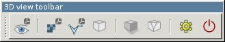
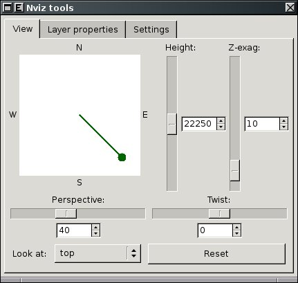
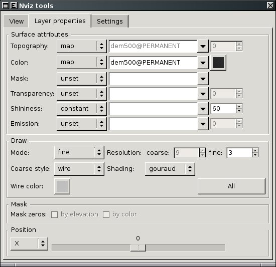
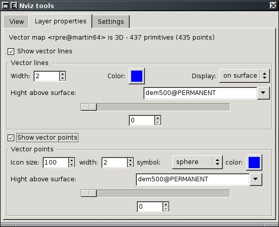
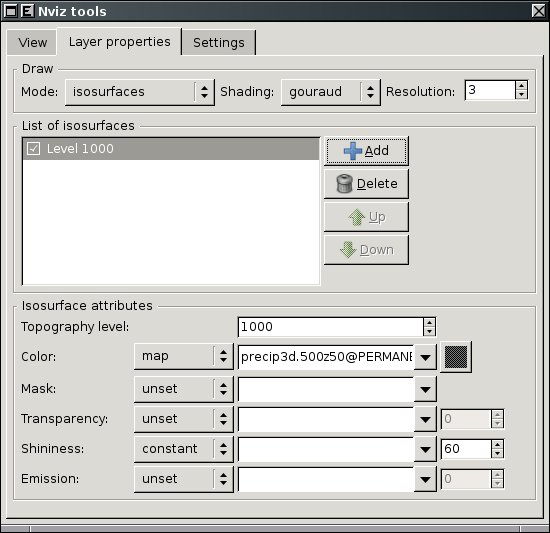
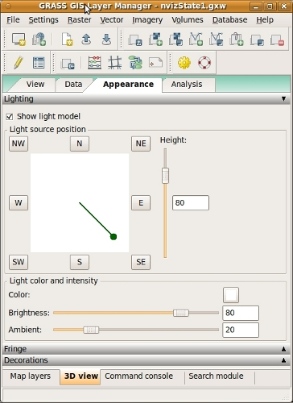

DESCRIPTION
Note: wxNviz is currently under development. Not
all planned functionality is already implemented.
wxNviz is a wxGUI 3D view
mode which allows users to realistically render multiple
surfaces (raster data) in a 3D space, optionally using
thematic coloring, draping 2D vector data over the surfaces,
displaying 3D vector data in the space, and visualization
of volume data (3D raster data).
To start the wxGUI 3D view mode, choose '3D view' from the map
toolbar. You can switch between 2D and 3D view. The region in
3D view is updated according to displayed region in 2D view.
wxNviz is emphasized on the ease and speed of viewer positioning and
provided flexibility for using a wide range of data. A low resolution
surface or wire grid (optional) provides real-time viewer positioning
capabilities. Coarse and fine resolution controls allow the user to
further refine drawing speed and detail as needed. Continuous scaling
of elevation provides the ability to use various data types for the
vertical dimension.
For each session of wxNviz, you might want the same set of 2D/3D
raster and vector data, view parameters, or other attributes. For
consistency between sessions, you can store this information in the
GRASS workspace file (gxw). Workspace contains information to
restore "state" of the system in 2D and if wxNviz is enabled also in
the 3D display mode.
3D View Toolbar

 Generate command for m.nviz.image
Generate command for m.nviz.image- Generate command for m.nviz.image based on current state.
 Show 3D view mode settings
Show 3D view mode settings- Show dialog with settings for wxGUI 3D view mode. The user
settings can be stored in wxGUI settings file.
 Show help
Show help- Show this help.
3D View Layer Manager Toolbox
The 3D view toolbox is integrated in the Layer Manager. The toolbox
has several tabs:
- View for view controlling,
- Data for data properties,
- Appearance for appearance settings (lighting, fringes, ...).
- Analysis for various data analyses (only cutting planes so far).
- Animation for creating simple animations.
View
You can use this panel to set the position, direction, and
perspective of the view. The position box shows a puck with a
direction line pointing to the center. The direction line indicates
the look direction (azimuth). You click and drag the puck to change
the current eye position. Another way to change eye position is
to press the buttons around the position box representing cardinal
and ordinal directions.
There are four other buttons for view control in the bottom of this panel
(following label Look:):
- here requires you to click on Map Display Window to determine
the point to look at.
- center changes the point you are looking at to the center.
- top moves the current eye position above the map center.
- reset returns all current view settings to their default values.

You can adjust the viewer's height above the scene, perspective and
twist value to rotate the scene about the horizontal axis. An angle of
0 is flat. The scene rotates between -90 and 90 degrees.
You can also adjusts the vertical exaggeration of the surface. As an
example, if the easting and northing are in meters and the elevation
in feet, a vertical exaggeration of 0.305 would produce a true
(unexaggerated) surface.
View parameters can be controlled by sliders or edited directly in text box.
It's possible to enter values which are out of slider's range (and it will
adjust then).
Fly-through mode
View can be changed in fly-through mode (can be activated in Map Display toolbar),
which enables to change the view smoothly and therefore it is suitable
for creating animation (see below). To start flying, press left mouse button
and hold it down to continue flying. Flight direction is controlled by mouse cursor
position on screen. Flight speed can be increased/decreased stepwise by keys
PageUp/PageDown, Home/End or Up/Down arrows.
Speed is increased multiple times while Shift key is held down. Holding down
Ctrl key switches flight mode in the way that position of viewpoint is
changed (not the direction).
Data properties
This tab controls the parameters related to map layers. It consists
of four collapsible panels - Surface, Constant surface,
Vector and Volume.
Surface
Each active raster map layer from the current layer tree is displayed
as surface in the 3D space. This panel controls how loaded surfaces are drawn.
To change parameters of a surface, it must be selected in the very top part of the
panel.
The top half of the panel has drawing style options.
Surface can be drawn as a wire mesh or using filled polygons (most
realistic). You can set draw mode to coarse (fast
display mode), fine (draws surface as filled polygons with
fine resolution) or both (which combines coarse and fine
mode). Additionally set coarse style to wire to draw
the surface as wire mesh (you can also choose color of the wire)
or surface to draw the surface using coarse resolution filled
polygons. This is a low resolution version of the polygon surface
style.
E.g. surface is drawn as a wire mesh if you set mode
to coarse and style to wire. Note that it
differs from the mesh drawn in fast display mode because hidden lines
are not drawn. To draw the surface using filled polygons, but with
wire mesh draped over it, choose mode both
and style wire.
Beside mode and style you can also choose style of shading used
for the surface. Gouraud style draws the surfaces with a
smooth shading to blend individual cell colors together, flat
draws the surfaces with flat shading with one color for every two
cells. The surface appears faceted.
To set given draw settings for all loaded surfaces press button "Set to all".
The bottom half of the panel has options to set, unset or modify attributes
of the current surface. Separate raster data or constants can be
used for various attributes of the surface:
- color - raster map or constant color to drape over the current
surface. This option is useful for draping imagery such as aerial
photography over a DEM.
- mask - raster map that controls the areas displayed from
the current surface.
- transparency - raster map or constant value that controls
the transparency of the current surface. The default is completely
opaque. Range from 0 (opaque) to 100 (transparent).
- shininess - raster map or constant value that controls
the shininess (reflectivity) of the current surface. Range from 0 to
100.
In the very bottom part of the panel position of surface can be set.
To move the surface right (looking from the south) choose X axis
and set some positive value. To reset the surface position press
Reset button.

Constant surface
It is possible to add constant surface and set its properties like
fine resolution, value (height), color and transparency. It behaves
similarly to surface but it has less options.
Vector
2D vector data can be draped on the selected surfaces with various
markers to represent point data; you can use attribute of vector
features to determine size, color, shape of glyph.
3D vector data including volumes (closed group of faces with one
kernel inside) is also supported.
This panel controls how loaded 2D or 3D vector data are drawn.
You can define the width (in pixels) of the line features, the color
used for lines or point markers.
If vector map is 2D you can display vector features as flat at a
specified elevation or drape it over a surface(s) at a specified
height. Use the height control to set the flat elevation or the drape
height above the surface(s). In case of multiple surfaces it is possible
to specify which surfaces is the vector map draped over.
For display purposes, it is better to set the height slightly above
the surface. If the height is set at zero, portions of the vector may
disappear into the surface(s).
For 2D/3D vector points you can also set the size of the markers.
Currently are implemented these markers:
- x sets the current points markers to a 2D "X",
- sphere - solid 3D sphere,
- diamond - solid 3D diamond,
- cube - solid 3D cube,
- box - hollow 3D cube,
- gyroscope - hollow 3D sphere,
- asterisk - 3D line-star.
Thematic mapping can be used to determine marker color and size
(and line color and width).

Volume
Volumes (3D raster maps) can be displayed either as isosurfaces or slices.
Similarly to surface panel you can define draw shading
- gouraud (draws the volumes with a smooth shading to blend
individual cell colors together) and flat (draws the volumes
with flat shading with one color for every two cells. The volume
appears faceted). As mentioned above currently are supported two
visualization modes:
- isosurface - the levels of values for drawing the
volume(s) as isosurfaces,
- and slice - drawing the volume
as cross-sections.
The middle part of the panel has controls to add, delete, move up/down selected
isosurface or slice. The bottom part differs for isosurface and slice.
When choosing isosurface, this part the of panel has options to set, unset
or modify attributes of the current isosurface.
Various attributes of the isosurface can be defined, similarly to surface
attributes:
- isosurface value - reference isosurface value (height in map
units).
- color - raster map or constant color to drape over the
current volume.
- mask - raster map that controls the areas displayed from
the current volume.
- transparency - raster map or constant value that controls
the transparency of the current volume. The default is completely
opaque. Range from 0 (opaque) to 100 (transparent).
- shininess - raster map or constant value that controls
the shininess (reflectivity) of the current volume. Range from 0 to
100.
In case of volume slice the bottom part of the panel controls the slice
attributes (which axis is slice parallel to, position of slice edges,
transparency). Press button Reset to reset slice position
attributes.
Volumes can be moved the same way like surfaces do.

Analysis
Analysis tab contains Cutting planes panel.
Cutting planes
Cutting planes allow to cut surfaces along a plane. You can switch
between six planes; to disable cutting planes switch to None.
Initially the plane is vertical, you can change it to horizontal by setting
tilt 90 degrees. The X and Y values specify
the rotation center of plane. You can see better what X and Y
do when changing rotation.
Height parameter has sense only when changing
tilt too. Press button Reset to reset current cutting plane.
In case of multiple surfaces you can visualize the cutting plane by
Shading. Shading is visible only when more than one surface
is loaded and these surfaces must have the same fine resolution set.
Appearance
Appearance tab consists of three collapsible panels:
- Lighting for adjusting light source
- Fringe for drawing fringes
- Decorations to display north arrow and scale bar
The lighting panel enables to change the position of light
source, light color, brightness and ambient. Light position is controlled
similarly to eye position. If option Show light model is enabled
light model is displayed to visualize the light settings.

The Fringe panel allows you to draw fringes in different directions
(North & East, South & East, South & West, North & West).
It is possible to set the fringe color and height of the bottom edge.
The Decorations panel enables to display north arrow and simple
scale bar. North arrow and scale bar length is determined in map units.
You can display more than one scale bar.
Animation
Animation panel enables to create a simple animation as a sequence of images.
Press 'Record' button and start changing the view. Views are
recorded in given interval (FPS - Frames Per Second). After recording,
the animation can be replayed. To save the animation, fill in the
directory and file prefix, choose image format (PPM or TIF) and then
press 'Save'. Now wait until the last image is generated.
It is recommended to record animations using fly-through mode to achieve
smooth motion.
Settings
This panel has controls which allows user to set default surface,
vector and volume data attributes. You can also modify default view
parameters, or to set the background color of the Map Display Window
(the default color is white).
To be implement
- Labels, decoration, etc. (Implemented, but not fully functional)
- Surface - mask by zero/elevation, more interactive positioning
- Vector points - implement display mode flat/surface for 2D points
- ...
NOTE
wxNviz is under active development and
distributed as "Experimental Prototype".
Please note that with wxGTK port of wxPython (Linux systems),
a problem might appear during wxNviz initialization (nothing is rendered at all)
or when rendering vectors (bad order of rendering surfaces and vectors).
If you encounter such problems, try to change a depth buffer number in
wxGUI Settings > Preferences > Map Display > Advanced
(possible numbers are 0, 16, 24, 32).
It is currently not possible to automatically determine the right number
which is working for your computer.
SEE ALSO
wxGUI
wxGUI components
See also wiki page
(especially various video
tutorials).
Command-line module m.nviz.image.
AUTHORS
Martin
Landa, Google
Summer of Code 2008 (mentor: Michael Barton)
and Google
Summer of Code 2010 (mentor: Helena Mitasova)
Anna Kratochvilova, Google
Summer of Code 2011 (mentor: Martin Landa)
$Date$